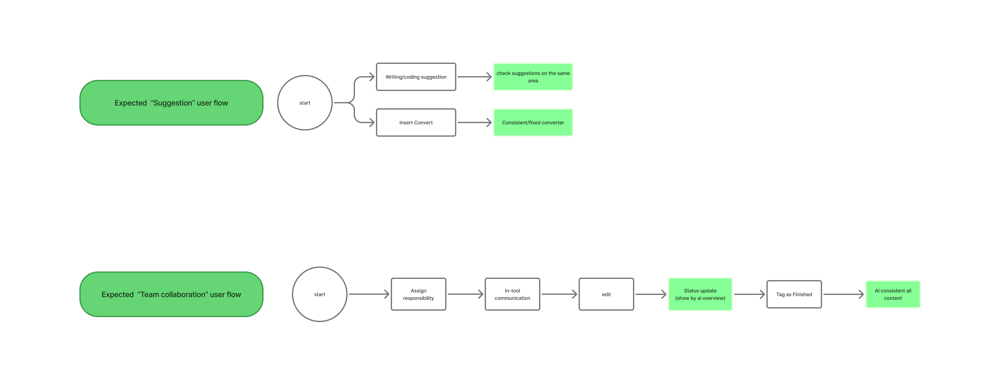

Autofix and Suggestion
🔧
Split across multiple flows, making it hard to locate errors or the right suggestions
WEB REDESIGN · SUMMER 2025
🔍 Reimagining collaborative academic writing through AI-powered workflows and intuitive design

Overleaf is a collaborative cloud-based LaTeX editor used by over 13 million researchers, students, and professors worldwide to write, edit, and publish scientific documents. Think of it as "Google Docs for LaTeX"—enabling real-time collaboration on academic papers, theses, and research publications that contain complex mathematical formulas and scientific notation.
Despite being the industry standard, Overleaf's current design creates friction in two critical areas: AI-powered suggestions are scattered across multiple disconnected features, and collaboration tools lack clarity on document ownership and real-time edits. Our goal was to redesign these workflows to create a seamless, intuitive experience for academic teams.
As the Lead UX Designer, I drove the project from research to high-fidelity prototyping:
Cross-functional collaboration: Worked closely with UX Researcher Maham Khawar on research methodology and UX Designer Lori Lei Cai on visual design and prototyping.
LaTeX has been the gold standard for scientific publishing for over 40 years, powering millions of research papers, theses, and academic publications across STEM fields. Overleaf emerged as the leading collaborative platform, bringing LaTeX into the cloud era—but its rapid growth exposed critical gaps in user experience.
The rise of generative AI has transformed writing workflows across industries. Academic researchers—Overleaf's core users—now expect intelligent suggestions, automated error detection, and context-aware assistance. Meanwhile, remote collaboration has become the norm post-pandemic, yet Overleaf's collaboration tools remain fragmented and unclear.
This redesign was initiated as part of the University of Washington HCDE Design for Passion program (Summer 2025). Our team chose Overleaf because:
We conducted qualitative in-depth interviews with 6 interviewees. Given the limited time frame, we kept
interviews relatively open-ended. Through the interviews, participants shared their screens and walked
through how they use the platform.
Based on a discussion guide with a set of prepared questions, we focused on topics regarding frequency
of platform use, typical use cases, challenges with the platform, and comparisons with competitors.
1. Understand current pain points in collaborative LaTeX editing
2. Identify gaps in existing AI suggestion features
3. Validate opportunity for improved workflow
Through the interviews, we found that most Overleaf users were highly-educated students currently pursuing their master's or PhD degrees, especially in math-heavy majors such as statistics and computer science.

User interviews identified three primary issues with the current Overleaf design: Autofix and Suggestion, Collaboration, and Citation.
Split across multiple flows, making it hard to locate errors or the right suggestions
Needs more clarity on parts of documents which have been previously edited and who has ownership on different parts
Current citation process is complex and monotonous, and users need to input manually
Before working on low-fidelity design, we started from understanding the current Overleaf's user flow. The current suggestion flow is scattered into 4 feature, which makes users confusing. For the collaboration, users need to manually assign responsibilities through third party tools, and communicate via Latex text.

We've brainstormed new AI powered user flow for suggestion and collaboration workflow, and re-structured the information architecture to address the user pain points. Structuring expected user flow gave us deep understanding how we should improve the usability through our design.

We categorized AI suggestions into two types. The first includes minor grammar or code issues already handled by Overleaf, which we unified and streamlined for consistent display. The second involves more complex cases like writing improvements or advanced debugging, for which we redesigned the AI experience to make suggestions easier to discover, review, and apply.


We went a step further. While Overleaf already offered some AI features, they were separated from the main editing flow, requiring users to interrupt their work to access AI support.


In our redesigned AI feature, we introduced a new left-side tab that allows users to easily access TexGPT, chat with it, and apply AI-generated suggestions seamlessly with a single click.
At the core of solving collaboration issues is our task board, which unifies conversations, comments, and real-time editing into one streamlined workflow. Collaborators can highlight sections and leave comments directly from the board. The board also lets users turn chats into tasks with one click. Each task shows its creator, related comments, and current status—processing, finished, or error. Once completed, users can check it off, and the update instantly syncs across the team and appears on the history page.


While enhancing collaboration feature with task board, by showing exactly where each member is working, team can avoid conflicts.
The user test result showed the redesigned and newly designed AI suggestion and collaboration workflow increased user satisfaction rate, decreased task completion time, and an increase in the perceived ease of use of the app.
1. If we had more time, we would improve the citation workflow as suggested by interviewees—not by manually inputting all citations as the current Overleaf does, but by integrating citation management tools into Overleaf.
2. After our presentation, a current Overleaf user suggested adding a feature that lets users control the degree of AI involvement when they are using a AI suggestion feature, which this approach gives users more flexibility and increases reliability by enabling them to know how much AI is incorporated.
· Collaborating with UX designers and UX researcher was a good opportunity to learn how solid user research impacts design.
· Starting from user research to prototyping, this experience enabled me to explore how AI can be effectively incorporated into current designs and how it can further improve them.